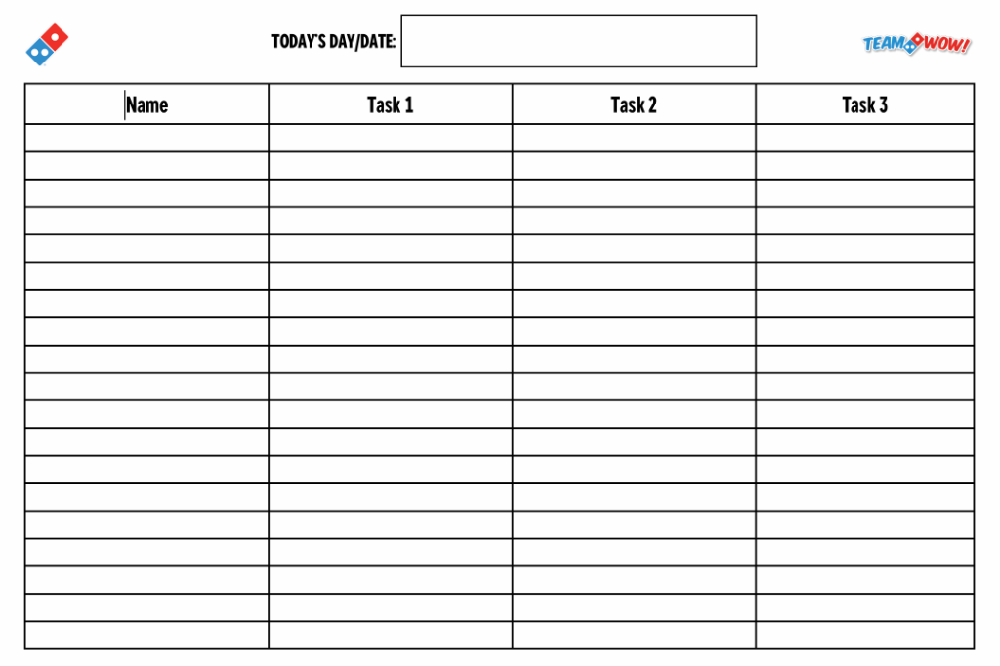

Customers trust us with their health and safety. Handwashing is the absolute foundation of food safety in every Team WOW store.
📋 The Official 5-Step Handwashing Process
STEP 1
💧
WET
Clean running warm water
STEP 2
🧼
SOAP & SCRUB
20 Seconds Minimum!
STEP 3
🚿
RINSE
Rinse all soap lather away
STEP 4
🧻
DRY
Single-use clean paper towel
STEP 5
🛑
TURN OFF
Use paper towel on faucet & door
🛡️ Domino's OA Critical Standard: Hand Sanitizer vs. Soap
Hand sanitizer is NEVER a replacement for handwashing! You must always wash with warm water and soap for 20 seconds. Hand sanitizer is only an optional secondary step.
🧤 Glove Standards & Ready-to-Eat Foods
Gloves are a protective barrier, not a magic shield. Master the Golden Rule and learn when food-grade gloves are strictly required.
🎙️ Coach Bobby
Gloves & The Golden Rule
0:00 / 0:37
🏆 Domino's OA Glove & Hygiene Non-Negotiables
🚫
NO Bare Hand Contact with Ready-To-Eat (RTE) Prep Foods: When portioning prepped chicken, steak, salads, or packaging ingredients into approved bags, food-grade gloves are 100% required.
🚫
NO Bare Hand Contact with Post-Bake Food: At the cut table and dispatch, only clean food-grade gloves or sanitized clean utensils may touch cooked pizzas, wings, bread, and desserts.
💅
Nail Policy: Painted or artificial nails are strictly forbidden while handling food unless approved food-grade gloves are worn properly at all times.
⭐
The Golden Rule: Always thoroughly wash and dry your hands before putting on a fresh pair of gloves. Never put clean gloves on dirty or unwashed hands!
🚰 3-Compartment Sink & Sanitizer PPM Lab
Every temperature and concentration at the dish pit is tested on OA inspections. Learn the 3 sinks and test your chemical concentration.
🎙️ Coach Mike
3-Compartment Sink & Sanitizer Standards
0:00 / 1:25
1. WASH
110°F – 120°F
Hot soapy water with Pot & Pan Detergent.
⏱️ Wash 30 Seconds
2. RINSE
110°F – 120°F
Clean warm water to remove all soap film.
⏱️ Rinse 30 Seconds
3. SANITIZE
75°F (Room Temp)
Quat Sanitizer at 200 PPM target.
⏱️ 60s Contact • Air Dry Only
🧪 Interactive Sanitizer Test Strip Lab
Hold the test strip still in the solution for 10 seconds (do NOT swish or stir). Click below to test the sink!
Ready to Test
✅ 200 PPM — Target Concentration Passed!
Remember: Re-test all 3-compartment sinks and red sani-buckets every 2 to 4 hours as solution loses potency.
⚠️ Chemical Safety, EcoLab & SDS
Professional-grade cleaners require strict safety adherence. Know your bottles, emergency eyewash stations, and the #1 safety law.
🎙️ Coach Mike
Chemical Safety & The Golden Rule
0:00 / 1:04
🚨 The #1 Chemical Safety Rule: NEVER MIX CHEMICALS
Mixing bleach with ammonia, vinegar, or other cleaners produces deadly toxic chloramine gas. Never combine cleaning chemicals in buckets, sinks, or spray bottles.
1. Color-Coded Labels
Only use labeled bottles for their designated chemical.
2. Eye Wash Station
Flush eyes continuously for 15 minutes if splashed.
3. SDS Binder Location
Safety Data Sheets are kept at the manager station.
⚠️
Do Not Use Surface Sanitizer on Hands
Quaternary ammonium sanitizer from the 3-compartment sink or spray bottles is strictly for food-contact equipment and counters—never for washing or sanitizing hands.
📋 The Chore Board: "If It Isn't Documented, It Didn't Happen"
A great shift doesn't happen by accident. Learn how Team WOW uses the daily chore board to maintain 5-star OA store cleanliness.
🎙️ Coach Bobby
The Chore Board & Accountability
0:00 / 0:34
📌 Team WOW Daily Station Responsibilities

1. Task Assignment
Check your assigned station (Makeline, Dish Pit, Lobby, Cut Table).
2. Complete & Initial
Always write your initials next to completed duties.
3. Shift Handoff
Restock and clean your station before passing it to the next shift runner.
🏆 Sanitation Mastery Check
Listen to Coach Bobby's rally, then lock in your 100% score to unlock Experience 1 (In-Person Cleaning Tour).
🎙️ Coach Bobby
The Team WOW Way — Rally
0:00 / 0:25
📝 Day 2 Module 2 Knowledge Check
🎉
MODULE 2 COMPLETE!
You have mastered Domino's sanitation, 3-compartment sink setup, and chemical safety rules. You are now authorized for Experience 1: Hands-on Cleaning Tour with your Trainer!